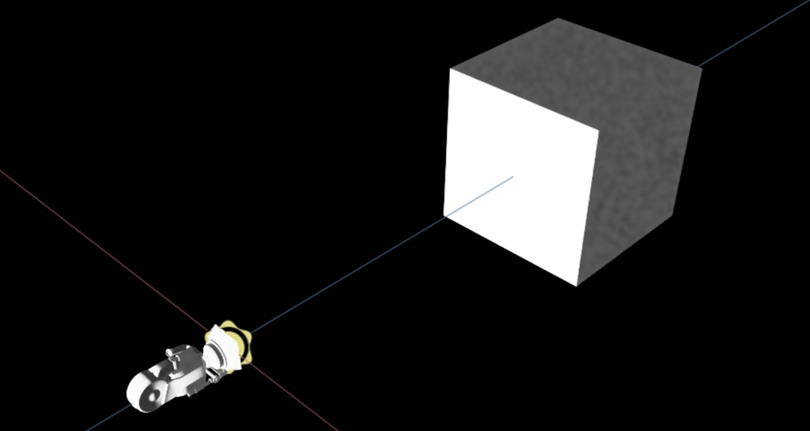
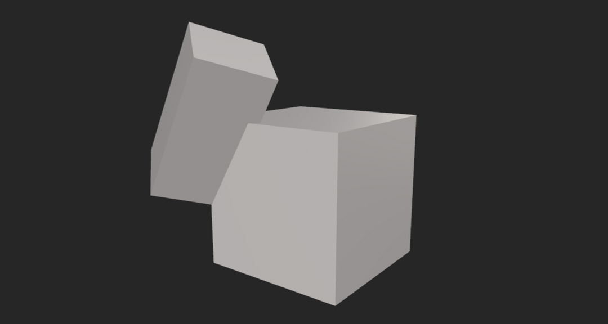
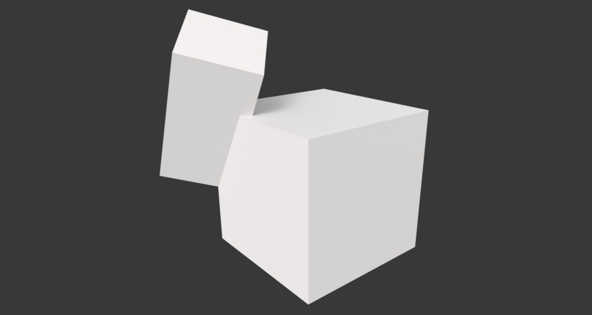
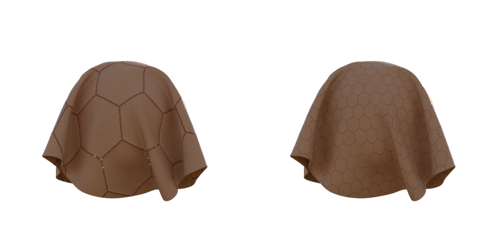

Getting Started
Create and build a scene
API Modules : scene, material, primitive, light
Substance 3D Scene Automation (SSCA) projects require a scene in which to work. The scene acts like a canvas for a painter : without the canvas, the painter has nowhere to use their paint, just as without a scene, SSCA has no space in which to operate.
The script below shows how to create a scene, add a cube and a light to it, and then save the scene.
# import the scene module from the api package
from substance3d.api import scene, primitive, light
# create a new scene
my_scene = scene.new()
# create a cube
shape1 = primitive.cube(my_scene, 'cube')
# create a light
light1 = light.distant(my_scene, 'distant_light')
# save the scene with a valid output filepath
output_path = scene.save(my_scene, './TestScene.usda')
Notice how the cube and light both need to reference my_scene object as a parent. Without a parent, these objects can’t be created, hence why we need the scene.
The image above shows how the scene should appear in Omniverse Create.
The scene.new() function allows you to pass a filepath as a parameter. By setting the filepath when the scene is created rather than when it is saved, the scene module will create an empty file at the given path to reserve the filename. If the path is defined when the scene is created with scene.new(), then you do not need to specify the filepath with scene.save().
Also note that relative filepaths are valid and are relative to the working directory path defined for the run configuration. For example, if your run configuration’s working directory is set to C:/SSCA/Output then scene.save(my_scene, "./TestScene.usda") will save the scene to C:/SSCA/Output/TestScene.usda
Note
To facilitate imports of scenes made with SSCA within other DCCs and Substance Viewer, any new entity created with a function that supports StageHandler as parent will be created under the defaultPrim of the scene instead.
scene.new() automatically creates a PrimHandler (XForm) named “root” at the base of the scene and set it as the defaultPrim for this use.
As a result, the above scene tree is actually looking like this:
TestScene.usda
└── root
├── cube
└── distant_light
To disable this default behavior and create entities directly at the root of the scene (StageHandler), set the global option ALLOW_CREATION_AT_ROOT_STAGE to True.
# These two lines must be called before any SSCA module
import substance3d.api
substance3d.api.ALLOW_CREATION_AT_ROOT_STAGE = True
from substance3d.api import scene, primitive, renderer
Load and edit a scene
API Modules : scene, transform, camera
While you can create scenes from scratch, it’s often useful to load existing 3D files.
SSCA can load multiple different 3D filetypes beyond USD to modify and then save as USD,
call scene.ALLOWED_EXTENSIONS variable to have the list.
The script below loads the USDA file created in the “Create and build a scene” section. First the script adds a camera, then it searches the file for an existing cube object and updates the cube’s position. Finally, the script saves the updated scene with a new filename to avoid overwriting the original USD file.
from substance3d.api import scene, transform, camera
# load existing scene
my_scene = scene.load('./TestScene.usda')
# add a camera
my_cam = camera.create(my_scene, 'camera')
# search the scene for the cube, move the cube to be visible from the camera, then frame it.
my_cube = my_scene.search('*cube*', type='mesh')[0]
transform.translate(my_cube, (0.0, 0.0, 50.0))
camera.frame(my_cam, my_cube)
# save the scene to a new file
output_path = scene.save(my_scene, './UpdatedTestScene.usda')
The image below shows the resulting scene after being modified by the script above.
Although we transform (move) the cube in the script above, we won’t cover that in this article. Instead, you can learn more about moving objects in the scene in this article about the transform module, Move objects.
You can also learn more about using the scene.search() function in this article, Search the scene.
Currently supported tesselated files formats :
.3dxml, .3mf, .dae, .pdf, .prc, .fbx, .glb, .gltf, .obj, .stl,
.vrml, .wrl
Other supported CAD formats :
.3dm, .3ds, . abc, .arc, .asm, .axf, .catdrawing, .catpart,
.catproduct, .catshape, .cgr, .dlv, .dwf, .dwfx, .dxf, .exp,
.iam, .ifc, .ifczip, .iges, .igs, .ipt, .jt, .mf1, .model, .neu,
.par, .pkg, .ply, .prt, .psm, .pwd, .rfa, .sab, .sat, .sbsar,
.sdf, .session, .sldasm, .sldprt, .step, .stp, .stpx, .stpxz,
.stpz, .u3d, .unv, .usd, .usda, .usdc, .usdz, .vda, .x_b, .x_t,
.xas, .xmt, .xmt_txt, .xpr
Warning
A loaded USD scene must have a valid defaultPrim if the user wants to create entities using StageHandler as argument (see note in the section above). Otherwise, NotAValidateDefaultPrim error will be raised by the function creating the entity.
A defaultPrim can always be set using scene.set_default or <scn>.defaultPrim = 'defaultPrimName', where <scn> is the variable containing your StageHandler.
Create objects with SSCA
API Modules : primitive
Earlier articles in this user guide have already covered how to create objects with SSCA, so instead of a full script, here’s an example of how to make a cube:
shape1 = primitive.cube(my_scene, 'cube')
Look at the Primitive module documentation for more information and options.
Import meshes and other content from existing files
API Modules : scene
Once you have created a scene, it’s often useful to import objects from other files to use within your scene.
Import as layer
scene.add_layer() adds all the content from another file as a new layer on top of the current scene.
Like photoshop, it’s possible to stack many layers on top of each other to compose your final scene.
In the example below, we’re adding a layer using a .usda file, but many other file formats are supported, including FBX, OBJ, and GLTF.
Use scene.ALLOWED_EXTENSIONS to get a list of all of them.
# create a new scene
my_scene = scene.new('./MyScene.usda')
# import/append all the content of an existing file above all the content of my_scene
scene.add_layer(my_scene, './ImportScene.usda')
Note
If you need to fine-tune the content once it is imported in the scene, you may want to use scene.add_reference() instead.
Import as reference
scene.add_reference() allows to select content from an other file and import it in the current scene.
The imported content will replace the content of the selected PrimHandler (usually an XForm Prim) into which it is imported.
References are mainly used to import assets from different files in a main scene to do, for example, set dressing. It allows a better control of the scene hierarchy.
Note
If the referenced file has a declared default object (e.g : defaultPrim metadata in USD), this object and all its sub-objects will be imported.
Otherwise, you can specify the desired object to import using default_object argument.
By default, the default object of all non-USD files will be the root of the scene.
In order to better understand how the reference content will replace the scene content, consider two files, A.usd and B.usd.
A.usd has the following structure:
* Scene * Cube1 * Light1
B.usd has the following structure:
* Scene * Sphere1 (defaultPrim) * Sphere2 * Sphere3
Let A.usd reference B.usd with Cube1 as the parent using
scene.add_reference(Cube1, "./B.usd"), the new structure of A.usd will be:* Scene * Cube1 * Sphere2 * Sphere3 * Light1
As we can see in the above example, the imported defaultPrim takes on the properties of the parent object, and only the children of the defaultPrim are imported to the hierarchy without being modified.
Search the scene for objects
API Modules : scene
After loading a scene or appending a file to your scene, you may need to modify objects for which you don’t yet have a variable.
You can look for objects in your scene with the scene.search() function or iterate through all of them with special iterators like scene.objects.
If performance is required and you don’t need the filters, prefer scene.objects and prim.children.
Get objects with scene.search()
from substance3d.api import scene, primitive
# creating scene elements that we store into variables
my_scene = scene.new()
level1 = primitive.xform(my_scene, 'level1')
level2 = primitive.xform(my_scene, 'level2')
# creating scene elements that we don't store in variables
primitive.cube(level1, 'level1_cube1')
primitive.cube(level1, 'level1_cube2')
primitive.cube(level2, 'level2_cube1')
primitive.cube(level2, 'level2_cube2')
# looking for objects with "cube2" in their name in the entire scene
print(my_scene.search('*cube2*')) # > Will find and print two objects
.search() can be used in the same manner to find an object in a specific scope.
# looking for objects with "cube2" in their name in the level1 scope
print(level1.search('*cube2*')) # > Will find and print one object
The search operation will be limited to all the object’s children and grandchildren. This can be useful for decreasing search time in very large scenes.
Both search functions return lists of class PrimHandler. If no matching object is found, these functions will return an empty list.
Tip
The wildcard * character can be used as shown above. Additionally, regex can be used by setting is_regexp=True in the search function.
Below are some examples of useful search operations:
# Searches the scene for an object with name cube.
cube = my_scene.search("cube")[0]
# Returns a list of all objects of type "camera" in the scene.
cameras = my_scene.search(type="camera")
# Searches for a material object under the cube object.
cube_material = cube.search(type="material")[0]
# Returns a list of all objects that have "shoe" in their name.
shoes = my_scene.search("*shoe*")
# Returns a list of all objects that contain any of the terms "shoe", "shirt", or "glove".
clothing = my_scene.search(r"(?:shoe|shirt|glove)", is_regexp=True)
# Returns a list of all objects that have "cube" in their path.
# By default, looks only at object names,
# but with in_path=True arg, the path is also included.
results = my_scene.search("*cube*", in_path=True)
The type argument can be particularly useful for narrowing search results.
The list below shows a list of common types (the USD format allows for custom types to be created,
so this isn’t a full list, to get the full list call scene.AVAILABLE_OBJECT_TYPES variable):
BlendShape
Camera
Capsule
Cone
Cube
Cylinder
CylinderLight
DiskLight
DistantLight
DomeLight
GeometryLight
Material
Mesh
NodeGraph
NurbsCurves
OpenVDBAsset
Points
PortalLight
RectLight
Scope
Shader
SpatialAudio
Sphere
SphereLight
Volume
Xform
Get objects with special iterators
There are two other ways to access objects, by using special iterators.
Scene’s .objects iterator and object’s .children iterator.
We will see the different features of them:
Iterate through the scene’s objects:
objects = my_scene.objects
for obj in objects:
print(obj.path)
Get an object by giving an index:
object = my_scene.objects[1]
Get object by giving an object path:
object = my_scene.objects["/Cube1/Sphere3"]
From an object, iterate its children:
for obj in my_cube.children:
print(obj.path)
From object, get a child by index:
child = my_cube.children[0]
From object, get a child by name:
child = my_cube.children["Sphere3"]
Advanced : Improving performance even more while iterating through the scene
The most efficient way to iterate through all objects in the scene is using the scene.objects iterator.
However, you may have thousands of objects and iterating through all of them may be costly if you’re only checking for aliases like variant sets or relationships like material binding.
For this situation, you can deactivate attribute initialization using the following setup :
scn.objects.with_attrs = False
for o in scn.objects:
o.material.binding.get()
o.variant_sets
# ...
How to get back the PrimHandler’s attributes?
Once you’ve iterated through the scene, you can get attrs back on your selection with my_prim.update().
# ...
o.update()
# ...
Move objects
API Modules : transform
The Transform module allows you to translate, rotate, and scale objects in your scene. You can perform these operations on all object types, including cameras and lights, to find the best composition for your scene.
Note
Currently all the transform functions add transformation values to the already existing one (if they exist), like you move a transform gizmo in a 3d software.
The script below shows how to translate, scale, and rotate an object in the scene.
from substance3d.api import scene
from substance3d.api import primitive
from substance3d.api import transform
project_path = "./ExampleScripts/Generated_USDs/"
# Create an empty scene
my_scene = scene.new(project_path + 'Transform_Test.usda', force=True)
# Create a cube and a sphere
cube = primitive.cube(my_scene, 'cube')
cube2 = primitive.cube(my_scene, 'cube2')
# Translate, rotate, and scale the cube. and leave the sphere at the origin.
transform.translate(cube, (1.0, 1.0, 1.0))
transform.rotate(cube, (45.0, 45.0, -37.0))
transform.scale(cube, (0.5, 0.5, 1.0))
# Save the scene.
# The scene location was set when we created the my_scene object, so it doesn't need to be defined during the save operation.
output_path = scene.save(my_scene)
The script above generates a USDA file containing a cube and a sphere with the cube transformed away from the origin.
To make the scene a little more interesting we can add a distant light and rotate it to create some shadows. Add the code below to the script (make sure it’s added before the line where the scene is saved, or the change won’t be reflected in the saved USDA).
# Create a light and rotate it to create shadows
from substance3d.api import light
my_light = light.distant(my_scene, 'distant_light')
transform.rotate(my_light, (315.0, 40.0, 0.0))
With the light added the scene should look something like the image below.
Material
API Modules : material
SSCA includes several options to create a material. They can be created from an SBSAR files, texture directories, or with a set of inputs.
Note
For the following sections, keep in mind that created materials are put under /{defaultPrim}/materials Prim by default.
You can set another parent by passing a Primhandler of type Scope to materials_root_path argument in any of the functions mentionned below.
Important
Materials can only be created under Scope Primhandlers.
Create a material from textures
The code below shows how to create a simple PBR material by pointing to a collection of textures.
# set a path to your texture folder
texture_path = "./textures"
# create a dictionary with the texture usage as key, and texture filename as value
texture_dictionary = {
"baseColor": texture_path + "DefaultMaterial_Base_color.png",
"metallic": texture_path + "DefaultMaterial_Metallic.png",
"ambientOcclusion": texture_path + "DefaultMaterial_Mixed_AO.png",
"normal": texture_path + "DefaultMaterial_Normal.png",
"height": texture_path + "DefaultMaterial_Height.png",
"roughness": texture_path + "DefaultMaterial_Roughness.png"
}
# create the material from the texture dictionary
cubes_material = material.create_from_inputs(my_scene, 'cubes_material', texture_dictionary)
To gain time, it is also possible to create a PBR material by pointing to a textures directory that follows the Substance usages convention.
If textures contains one of this usage names in their file name they will be automatically matched with the correct input:
SUBSTANCE_USAGE_MAPPING = {
"diffuseColor": ("baseColor", "Base_Color"),
"emissiveColor": ("emissive",),
"metallic": ("metallic",),
"roughness": ("roughness",),
"clearcoat": ("coatWeight",),
"clearcoatRoughness": ("coatRoughness",),
"opacity": ("opacity",),
"ior": ("IOR",),
"normal": ("normal",),
"displacement": ("displacement",),
"occlusion": ("ambientOcclusion", "MixedAO", "Mixed_AO"),
...
}
So, create a material from a textures directory with:
# set a path to your texture folder
texture_dir = "./textures"
cubes_material = create_from_textures_dir(my_scene, 'cubes_material', texture_dir)
You can get the full list of substance usage mapping by printing the result of material.SUBSTANCE_USAGE_MAPPING
Note
The usage names matching ignore the case
Create a material from an SBSAR file
Creating a material from an SBSAR file is as simple as a single line of code:
sbsar_material = material.create_from_sbsar(my_scene, "./SBSARs/SimpleMat.sbsar", "sbsar_mat" )
Here we’re creating a material, giving it the name “sbsar_mat” and putting it by default into the /materials scope.
Once you’ve created a material from an SBSAR file, you can manipulate its presets, resolution and parameters.
The code below shows how to print out a list of the presets for a material, and then set the material to use one of those presets.
# print the names of available presets
print(material.get_sbsar_presets(sbsar_material))
# set the material to use the first listed preset
material.set_sbsar_preset(sbsar_material, material.get_sbsar_presets(sbsar_material)[0])
The code below shows how to get and change the resolution.
# get the material resolution
print(material.get_sbsar_resolution(sbsar_material))
# set the material resolution (64, 128, 256, 512, 1024, 2048, 4096)
material.set_sbsar_resolution(sbsar_material, 2048)
The code below shows how to get the list of the parameters of the SBSAR file, and how to tweak them.
# print the parameters of the material
all_parameters = material.get_sbsar_parameters(sbsar_material)
print(all_parameters)
# it prints a dictionnary with the following information per parameter
{ 'parameter_identifier' : {
'guiDescription': 'description of the parameter',
'guiGroup': 'group of the parameter',
'guiWidget': 'widget of the parameter (color, slider, ...)',
'identifier': 'identifier of the parameter',
'label': 'label of the parameter',
'maxValue': 'maximum value of the parameter',
'minvalue': 'minimum value of the parameter',
'type': 'type of the parameter (float, float2, float3, int, int2, boolean, ...',
'uid': 'uid of the parameter',
'value': 'value of the parameter'
}
}
# get only color parameters of a material
color_parameters = material.get_sbsar_parameters(sbsar_material, widget=material.SbsarWidget.COLOR)
# get only parameters containing the word "roughness"
roughness_parameters = material.get_sbsar_parameters(sbsar_material, filter='*roughness*')
# Change the parameter value
# If it's a boolean
material.set_sbsar_parameter(sbsar_material, 'my_boolean_parameter', True)
# If it's an integer
material.set_sbsar_parameter(sbsar_material, 'my_integer_parameter', 1)
# If it's a float
material.set_sbsar_parameter(sbsar_material, 'my_float_parameter', 0.12)
# If it's a float3
material.set_sbsar_parameter(sbsar_material, 'my_float3_parameter', (0.85, 0.45, 0.12))
Assign a material to an object
Materials won’t do much if they aren’t used in your scene. The code below shows how to assign a the SBSAR material created above to your objects:
material.assign_to_objects(sbsar_material, objects)
Note that objects in this case can be a single object or a list of objects.
Note
If you assign a material to a unique object, like a parent xform, the material will be mapped to all its children.
When assigning a material to a object or a list of objects, you can automatically scale them based on the physical size of material and objects.
material.assign_to_objects(sbsar_material, objects, apply_physicalsize=True)
Material applied without physical size - material applied with physical size (left to right)
Transform a material
Materials are currently projected on UVs. The code belows shows how to transform a material in the UV space.
# Scale
material.scale(sbsar_material, (2.0,2.0))
# Translate
material.translate(sbsar_material, (0.5, 0.5))
# Rotate
material.rotate(sbsar_material, 45.0)
Lights
API Modules : light
The USD format has a large range of lights available, but by default some of their names may be unfamiliar. This video created by Nvidia covers the lights available with USD and explains how lights can behave differently with the USD format. The table below shows the USD equivalent of common light types:
Common name |
USD equivalent |
|---|---|
Directional light |
Distant light |
Point light |
Sphere light |
Area light |
Rect light |
Environment light/Sky light |
Dome light |
The light module has methods that allow you to create any of the 5 basic types of light:
light.distant(my_scene)
light.cylinder(my_scene)
light.disk(my_scene)
light.rect(my_scene)
light.sphere(my_scene)
Dome Lights
Dome lights behave slightly differently than other lights as they require an HDRI to cast light. To create a dome light and attach a texture to it, use:
dome_path = "./skylight.hdr"
light.dome(my_scene, identifier='my_dome_light', texture_path=dome_path)
Cameras
API Modules : camera
Create cameras
Cameras are necessary to create renders with SSCA. There are 3 ways to create a camera with the camera module :
A simple default camera with
camera.create()
from substance3d.api import camera
primary_camera = camera.create(my_scene, "camera1")
A camera with custom properties using
camera.CameraProperties()
from substance3d.api import camera
# create camera properties and edit some of them
props = camera.CameraProperties()
props.exposure = 1.0
props.verticalAperture = 10.0
# create camera using those properties
primary_camera = camera.create(my_scene, 'primary_cam', props)
Editable camera properties:
clippingPlanes
clippingRange
radius
exposure
fStop
focalLength
focusDistance
horizontalAperture
horizontalApertureOffset
projection
purpose
stereoRole
verticalAperture
verticalApertureOffset
Multiple cameras around one or several objects using
camera.create_framed_cameras(). Useful for creating turntables or contact-sheet with rendered images.
from substance3d.api import camera
# create 30 cameras focused on shape1 object
camera.create_framed_cameras(my_scene, shape1, 30)
Rendering
API Modules : renderer
SSCA includes an easy 3-steps process for rendering using the renderer module :
from substance3d.api import renderer
# initialize the renderer
renderer.init(my_scene)
# render an image of the scene in 512x512p with the renderer
rendered_img = renderer.render(my_scene, (512, 512), camera=primary_camera)
# save the image
rendered_img.save('./Render.png')
Note
camera is optional. If no camera argument is given, the renderer will create a temporary default camera framing the scene that will last until the end of the render.
You can do a render of all your cameras using the .search() method on your scene and iterating through all of them with a simple loop.
# search the scene for all camera objects
cameras = my_scene.search(type = 'camera')
# initialize the renderer
renderer.init(my_scene)
counter = 1 # camera counter
# loop through all cameras in the scene, rendering and saving an image for each of them
for cam in cameras:
rendered_img = renderer.render(my_scene, resolution=(512, 512), default_light=True, camera=cam)
rendered_img.save('./Camera' + str(counter) + '.png')
counter += 1
Render Settings
In addition to renderer.init() and renderer.render() arguments, render parameters can be accessed through a Prim called RenderSettings.
Definitions and examples of usage of this prim are out of the scope of this section,
but you can learn more about it in this section.
Add a background
By default, images are rendered with a transparent background. This can be useful in some workflows, but you may also want to add a background to your renders. The snippet below shows how to render with a given background:
# initialize the renderer
renderer.init(my_scene)
# render and add a background image
renderer.render(my_scene, camera=cam, background_image='./background.png')
Export
API Modules : export
Sometimes you may need to export to formats other than USDA and USDC. SSCA allows you to export to FBX, GLTF and USDZ. Note that each file format has their own limitations, and they may not necessarily support saving all aspects of your scene. The snippet below shows how to export to each file format:
# export to USDZ
export.archive(my_scene, "./File.usdz")
# export to FBX – bake_sbsar=False stops the exporter from baking down materials.
export.fbx(my_scene, "./File.fbx", bake_sbsar=False)
# export to GLTF or GLB
export.gltf(my_scene, "./File.gltf")
export.glb(my_scene, "./File.glb")
Note
All these export functions have bake_sbsar argument. If it set to True all, the sbsar materials will be rendered as
texture files and reassigned correctly to their objects.
This allows other USD software to read your export without the need of the sbsar USD plugin.
Image manipulation
API Modules : image
It’s time to finalize your workflow by gathering your renders into images.
As you may have noticed into previous render section, renderer.render() returns an Image object
that you can save by calling my_render.save('./my_render.png').
Let’s see how to use Image object and image module.
The image module provides several features to manipulate and create image.
from substance3d.api import image
# resize an Image and save it as new file
resized_img = image.resize(rendered_img, (1024, 512))
resized_img.save("./my_resized_img.png")
# create a solid color image and save it, by giving a (r, g, b) tuple and a size
solid_img = image.create_solid_color((0.8, 0.5, 0.0), (1024, 512))
solid_img.save("./solid_color.png")
Tip
Every method of image module can take an Image object or a file path to an image as argument, interchangeably.
Use image.over() function to compose an image. For example, this can be used to add an image background behind an image with transparency.
from substance3d.api import image
# init the renderer with transparent background
renderer.init(my_scene, renderer_name='Eclair', environment_background=False)
# render the scene
rendered_img = renderer.render(my_scene, (512, 512), default_light=True, camera=cam)
# combine the rendered image with the imported background image
background_img = './background_image.png'
composited_image = image.over(rendered_img, background_img)
# save the composited image
composited_image.save('./final_image.png')
Tip
All formats supported by Image.save() can be found by printing image.ALLOWED_EXTENSIONS attribute.
Image formats supported in Eclair renderer :
.bmp, .jpg, .jpeg, .png, .tga, .hdr, .exr, .tif, .webp
Other supported images formats :
.dib, .gif, .rgbe, .ico, .jpe , .jif, .jfif, .jfi, .null, .nul
.sxr, .mxr, .tpic, .term, .tiff, .tx, .env, .sm, .vsm
Variants
Variants are used to save several variations of a scene, object, material, etc. that you can modify on the fly.
Each variant must have an unique identifier variant_identifier and be regrouped under
a common variant set variant_set. You can make as many sets and as many variants as you like.
Example :
from substance3d.api import scene, primitive, material, variant, transform
# create a standard scene tree
my_scene = scene.new()
root = scene.get_default(my_scene)
cube_grp = primitive.xform(root, 'cube_asset')
cube_geo = primitive.cube(cube_grp, 'cube_geo')
transform.rotate(cube_geo, (0.0,45.0,0.0))
cube_material = primitive.xform(cube_grp, 'cube_mat')
# create a red material variant under a new set called cube_color
cube_mat_red = variant.create(root, variant_identifier='red', variant_set='cube_color')
# enter in the red variant context to edit it
# all modifications on the cube or its children will be applied only on the variant
with cube_mat_red:
red_mat = material.create_solid_color(my_scene, 'red_mat', (1.0, 0.0, 0.0))
material.assign_to_objects(red_mat, cube_geo)
# exit the red variant edition
# create a blue material variant under the same set
cube_mat_blue = variant.create(root, variant_identifier='blue', variant_set='cube_color')
# enter in the blue variant context edition
with cube_mat_blue:
blue_mat = material.create_solid_color(my_scene, 'blue_mat', (0.0, 0.0, 1.0))
material.assign_to_objects(blue_mat, cube_geo)
# exit the red variant edition
# get all variants under the "cube_color" set
variant.get_identifiers(root, 'cube_color') # >> ['red', 'blue']
# set the variant of your choice
variant.set(root, 'blue', 'cube_color')
# clear the variant selection
variant.clear(root, 'cube_color')
At this point, you will have different options to render all your variants. The first way of doing it is by using variant selection. Note that you will have to manually clear the selection if you wish to switch back to default cube.
from substance3d.api import camera, light, renderer
# creating light and camera
d_light = light.distant(root, "distant_light")
d_light.inputs.intensity.set(25000) # Daylight intensity
cam = camera.create(root, "camera")
transform.translate(cam, (0.0,0.0,-50.0))
camera.frame(cam, cube_grp)
# rendering variants
renderer.init(my_scene)
cube_variants = variant.get_identifiers(root, 'cube_color')
for var_id in cube_variants:
variant.set(root, var_id, 'cube_color') # selects variant
rendered_img = renderer.render(my_scene, (512, 512), False, cam, samples=20)
rendered_img.save(f'./{var_id}_var.png')
# clearing the selection to switch back to default cube
variant.clear(root, 'cube_color') # clears variant selection
rendered_img = renderer.render(my_scene, (512, 512), False, cam, samples=20)
rendered_img.save('./default.png')
The other way is to render variants using context, avoiding the necessity of using variant selection.
from substance3d.api import camera, light, renderer
# creating light and camera
d_light = light.distant(root, "distant_light")
d_light.inputs.intensity.set(25000) # Daylight intensity
cam = camera.create(root, "camera")
transform.translate(cam, (0.0,0.0,-50.0))
camera.frame(cam, cube_grp)
# rendering variants
renderer.init(my_scene)
cube_variants = variant.get_identifiers(root, 'cube_color')
for var_id in cube_variants:
var = variant.get(root, var_id, 'cube_color') # gets the Variant object
with var:
rendered_img = renderer.render(my_scene, (512, 512), False, cam, samples=20)
rendered_img.save(f'./{var_id}_var.png')
# assuming you didn't select a variant, this will render the default cube
rendered_img = renderer.render(my_scene, (512, 512), False, cam, samples=20)
rendered_img.save('./default.png')
Animation
With SSCA, you can easily render animated scenes and also animate properties.
How to render a serie of frames:
# set the start and the end timecode of the given scene if it's not already set
scene.animation.set_time_range(my_scn, (0.0, 100.0))
# render all frames in the time range
for frame in my_scn.time_range:
renderer.render(my_scn, timecode=frame)
Below, we will see how to animate an object:
from substance3d.api import scene, primitive, transform, renderer, camera
my_scn = scene.new()
world = primitive.xform(my_scn, 'world')
cube = primitive.xform(world, 'cube')
scene.add_reference(cube, './assets/cube.fbx')
sphere = primitive.xform(world, 'sphere')
scene.add_reference(sphere, './assets/sphere.fbx')
cam = camera.create(my_scn)
camera.frame(cam, world, frame_fit=4)
# Add a key context to start animating
scene.animation.create_timecode_label(my_scn, 0.0, 'start')
with scene.animation.activate_timecode(my_scn, 'start'):
transform.set_translate(sphere, (300.0, 0.0, 0.0))
transform.set_translate(cube, (0.0, 0.0, 0.0))
with scene.animation.activate_timecode(my_scn, timecode=25.0):
transform.set_translate(sphere, (0.0, 0.0, 300.0))
transform.set_translate(cube, (0.0, 300.0, 0.0))
transform.set_rotate(cube, (0.0, 45.0, 0.0))
with scene.animation.activate_timecode(my_scn, timecode=50.0):
transform.set_translate(sphere, (-300.0, 0.0, 0.0))
transform.set_translate(cube, (0.0, 0.0, 0.0))
transform.set_rotate(cube, (0.0, 0.0, 0.0))
with scene.animation.activate_timecode(my_scn, timecode=75.0):
transform.set_translate(sphere, (0.0, 0.0, -300.0))
transform.set_translate(cube, (0.0, -300.0, 0.0))
transform.set_rotate(cube, (0.0, -45.0, 0.0))
scene.animation.create_timecode_label(my_scn, 100.0, 'end')
with scene.animation.activate_timecode(my_scn, 'end'):
transform.set_translate(sphere, (300.0, 0.0, 0.0))
transform.set_translate(cube, (0.0, 0.0, 0.0))
transform.set_rotate(cube, (0.0, 0.0, 0.0))
You can also directly get or set a transformation at a specific timecode with the timecode argument:
translation = transform.get_translate(cube, timecode=100.0)
speed = (0.0, 2.0, 0.0)
transform.set_translate(bike, (a * b for a, b in zip(translation, speed), timecode=200.0))